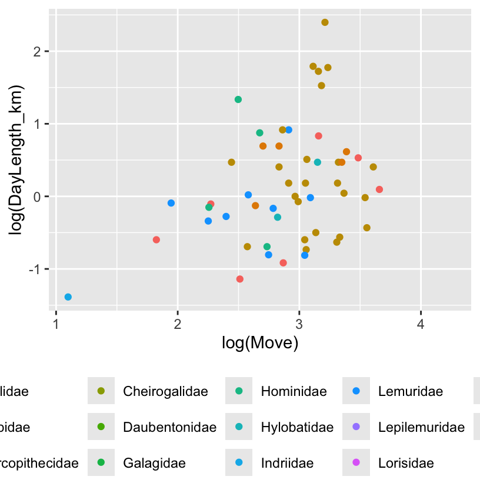
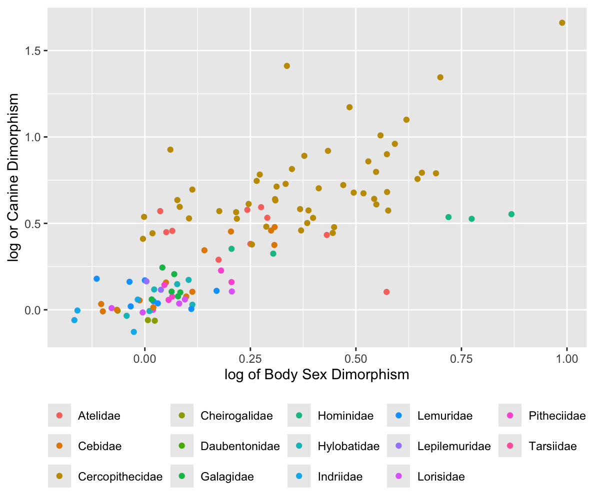

library(tidyverse)
library(ggplot2)
f <- file.choose()
d <- read_csv(f, col_names = TRUE)EDA-challenge
EDA Challenge for Exercise 3
Loading the Data
Prior to manipulating the data I loaded it into an R script with the following code. I chose file.choose() over a direct link out of habit. Doing this
Doing this created a tibble with 213 observations and 23 variables
Challenge 1-3: Creating Variables
First step was to a create the BSD (ratio of average male body mass to average female body mass), sex_ratio (ratio of all male members to all female members in a species), and DI (ratio of day range length to the diameter of the home range) variables in d. I did that by dividing the relevant columns for each new variable and loading the result as a new column in the tibble.
For DI, I had to calculate the diameter from the area in kilometers squared. I first created a vector for each of the variables radii which was the square root of HomeRange_km2 divided by pi. Then I created a new variable that was the r vector multiplied by 2, which multiplied two across each number.
(I also attached the tibble to make it easier to do this)
attach(d)
d$BSD <- (Body_mass_male_mean/Body_mass_female_mean)
d$sex_ratio <- (AdultMales/AdultFemale)
r <- sqrt(HomeRange_km2)/pi
d$diameter <- r*2
d$DI <- (DayLength_km/(diameter))Challenge 4-6: Plotting
Second step was to plot some of these to answer some basic questions about the data. For these plots, I used ggplot for it’s aesthetic value and customization.
Challenge 4
On average, across all primates, there appears to be slight correlation between time spent moving and total range covered in day (Figure 4.1).However, when we look at each family individually, only Atelidae and Cercopithecidae really show any slight correlation between more time spent moving and more distance covered (Figure 4.2)
##day length by time spent moving
p <- ggplot(data = d, aes(x = log(Move), y = log(DayLength_km), #log is applied to normalize the data
color = factor(Family)))
p <- p + xlab("log(Move)") + ylab("log(DayLength_km)")
p <- p + geom_point(na.rm = TRUE)
p <- p + theme(legend.position = "bottom", legend.title = element_blank())
p #checking first graph of them all together
p <- p + facet_wrap(~Family, ncol = 4)
p <- p + theme(legend.position = "none")
p #checking faceted graphsChallenge 5
On average, across all primates, there appears to be strong correlation between time spent moving and the average group size in a species (Figure 5.1). Looking across Family, most families follow the same correlation; however, Lemuridae exhibits only slight correlation and Hylobatidae seems to have no correlation at all (Figure 5.2).
##day length by avg. group size
p2 <- ggplot(data = d, aes(x = log(MeanGroupSize), y = log(DayLength_km), #log is applied to normalize the data
color = factor(Family)))
p2 <- p2 + xlab("log(Avg. Group Size)") + ylab("log(Day Range Length)")
p2 <- p2 + geom_point(na.rm = TRUE)
p2 <- p2 + theme(legend.position = "bottom", legend.title = element_blank())
p2 #checking first graph of them all together
p2 <- p2 + facet_wrap(~Family, ncol = 4)
p2 <- p2 + theme(legend.position = "none")
p2 #checking faceted graphsChallenge 6
On average, across all primates, there appears to be strong correlation between canine size dimorphism and the overall body size dimorphism in a species (Figure 6.1). Looking at each family individually reveals that only Cercopithecidae, Cebidae, Galagidae, and Hylobatidae really show a positive correlation. Some families, like Atelidae, even had a negative correlation (Figure 6.2).
##canine dimorphism by body dimorphism
p3 <- ggplot(data = d, aes(x = log(BSD), y = log(Canine_Dimorphism),#log for convenience
color = factor(Family)))
p3 <- p3 + xlab("log of Body Sex Dimorphism") + ylab("log or Canine Dimorphism")
p3 <- p3 + geom_point(na.rm = TRUE)
p3 <- p3 + theme(legend.position = "bottom", legend.title = element_blank())
p3 #checking total plot
p3 <- p3 + facet_wrap(~Family, ncol = 4)
p3 <- p3 + theme(legend.position = "none")
p3 #checking facetted plotChallenge 7: Diet Strategy
The third step was to create a new variable diet_strategy and to plot it.
After using the mutate() and ifelse() functions to create the new variable and loading it into the previous d tibble. I then had to create a secondary tibble with the NA rows in diet_strategy omitted so they wouldn’t be accounted for in my boxplot. This second structure was called dnoNA.
Plotting the results (Figure 7) reveals that on average frugivores tend to live in similar sized groups as folivores and omnivores; although ominivores interquartile range encompasses large group sizes. Frugivore species do have a much larger range than either other strategy.
d <- mutate(d, diet_strategy = ifelse(Fruit >= 50, "frugivore", ifelse(Leaves >= 50, "folivore",
ifelse(Fruit < 50 & Leaves < 50, "omnivore", NA))))
dnoNA <- d |> drop_na(diet_strategy)
#plotting
p4 <- ggplot(data = dnoNA, aes(x = diet_strategy, y = log(MeanGroupSize))) #loging for convenience
p4 <- p4 + geom_boxplot(na.rm = TRUE)
p4 <- p4 + theme(axis.text.x = element_text(angle = 90))
p4 <- p4 + ylab("avg. group size")
p4Challenge 8: Piping
The final step was to create a pipe of some basic dplyr verbs and then finish with the print() function.
I used mutate() to add a new column called Binomial to the data frame, then group_by() to group the data together, summarize() to return means for Brain_Size_Species_Mean and Body_mass_male_mean, and then finally arrange() to order the table by the mean of brain size from the summarize() results.
mutate(d, Binomial = paste(Genus, Species, sep = " ")) %>%
select(Binomial, Family, Brain_Size_Species_Mean, Body_mass_male_mean) %>%
group_by(Family) %>%
summarize(avgbrain = mean(Brain_Size_Species_Mean, na.rm = TRUE), avgbody = mean(Body_mass_male_mean,
na.rm = TRUE)) %>%
arrange(avgbrain)%>%
print()Figures



